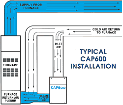

|  | Installing CAP600 series units in a “partial
bypass” configuration further enables the units to pull air through
the highly-efficient filters without adding any appreciable load to
the HVAC motor & blower. Bypass connections are made by cutting
a 10-inch diameter hole into the return duct and connecting the inlet
of the CAP unit to the duct with 10-inch rigid or flexible ducting.
The exhaust of the CAP unit is similarly connected into the return duct or plenum downstream from the inlet connection to complete the "bypass loop". Continuous operation of the HVAC fan and the CAP unit is recommended for maximum 24/7 air cleaning performance. |